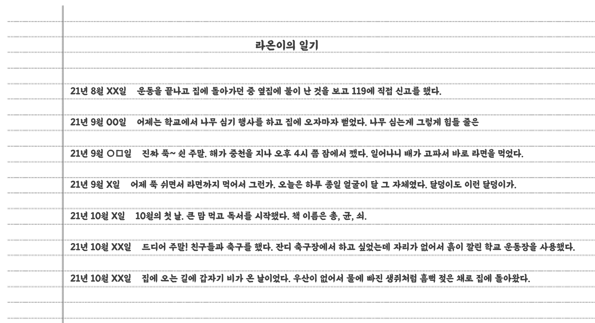

찾았다..! 사전.
어지럽게 책이 놓여있는 도서관에서 사전을 찾는 것 또한 쉽지 않은 일이었다. 책장에서 사전을 빼자마자 책장이 움직이면서 통로가 열렸다.
좋아! 생각보다 잘 풀잖아?!
이렇게 정리되어 있지 않은 곳에서 사전을 찾으니까 어때?
당연히 힘들지.
맞아! 우리 AI는 이렇게 쌓여있는 자료들을 데이터라고 불러
그리고 방대한 규모에 빠른 탐색이 가능한 자료를 빅데이터라고 하지
사전을 펼쳤을 때 우리는 원하는 단어를 빠르게 찾을 수 있잖아?
그것처럼 빅데이터는 수많은 데이터가 잘 정리되어 있고, 우리 AI가 학습하는데 활용되지
정리가 되어있지 않다는 건 어떤 의미야?
4시 30분, 4:30, 04-30 이렇게 제각각인 자료들을 말하는건가?
와! 대단한데?
맞아. 그런 데이터를 정제되지 않은 데이터라고 해
원하는 목적에 맞게 데이터의 형식이 정해지는 것도 굉장히 중요하거든
그 정도로 이해했다면 이번 방 문제. 쉽게 풀 수 있겠는걸?
말은 그렇게 했지만 라온이의 말은 그다지 신뢰감이 들지 않았다. 제발 쉬웠으면... 하는 생각을 하면서 문제를 들여다보았다.

역시 라온이의 말과 다르게 문제는 어려웠다. 근데 얘는 일기를 왜 이렇게 이상하게 쓰는거지?